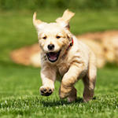
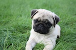
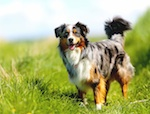
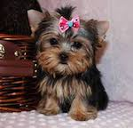

Corgis are very cute and have tiny little legs/paws
Golden Retrievers can turn out to be pretty big dogs, and they are also gentle with little kids
Pugs are very gentle when it comes to their owners, but they can also be lazy
Australian Sheperds are very kind, and have lots of energy
Yorkies are very small dogs, they have lots of energy, and are very gentle